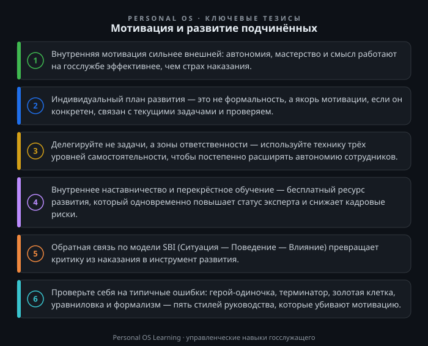

Каждый руководитель в системе государственной службы рано или поздно сталкивается с парадоксом: его сотрудники — квалифицированные, аттестованные специалисты, которые проходят профессиональную переподготовку, но при этом работают «на минималке». Не потому что плохие, а потому что не видят смысла выкладываться. Знакомая картина?
Специфика госслужбы такова, что классические корпоративные «кнуты и пряники» здесь работают плохо. Мы не можем предложить подчинённому опционы на акции или премию за перевыполнение KPI в размере трёх окладов — система оплаты труда жёстко регламентирована. Но это не значит, что мотивация и развитие подчинённых невозможны в принципе. Напротив, именно в условиях ограниченных материальных ресурсов руководитель вынужден осваивать более тонкие, а потому и более эффективные инструменты управления: смыслы, автономию, профессиональный рост, признание.
Цель этой статьи — показать, как руководитель органа власти или подразделения может выстроить систему мотивации и развития, опираясь на реальные ресурсы госслужбы: наставничество, индивидуальные планы развития, проектную деятельность, обратную связь. Вы получите конкретные инструменты, которые можно применить уже на этой неделе, и поймёте, почему «развитие» и «мотивация» — это не две разные задачи, а две стороны одного процесса.
Начнём с честного разбора ограничений. Денежное довольствие государственного гражданского служащего регулируется Федеральным законом «О государственной гражданской службе Российской Федерации» Федеральный закон «О государственной гражданской службе Российской Федерации». Премии, надбавки, материальная помощь — всё это имеет чёткие рамки. Как руководитель вы не можете волевым решением перепрыгнуть через штатное расписание, положения о премировании и лимиты бюджетных обязательств.
Означает ли это, что мотивация сводится к административному нажиму и страху наказания? К сожалению, в некоторых коллективах именно так и происходит. Руководитель «мотивирует» через контроль сроков, поручений и угрозу дисциплинарного взыскания. Результат предсказуем: формальное отбывание часов, бюрократическая волокита, текучка кадров и выгорание самых добросовестных сотрудников.
Между тем, исследования в области управления персоналом (и практика лучших органов власти) показывают: для высококвалифицированных специалистов, какими и должны быть госслужащие, на первый план выходят факторы внутренней мотивации:
Обратите внимание: всё это — ресурсы, которыми руководитель может управлять без дополнительного финансирования. Вопрос лишь в том, как их использовать системно.
Самая большая ошибка руководителя — рассматривать развитие подчинённого как что-то отдельное от текущей работы. «Сначала выполни план, потом будем думать о твоём росте» — тупиковая логика. Сотрудник, который не видит перспективы, быстро превращается в циника.
Нормативная основа для работы по развитию — Указ Президента РФ от 21.02.2019 № 68 «О профессиональном развитии государственных гражданских служащих Российской Федерации». Этим указом утверждено Положение о порядке осуществления профессионального развития государственных гражданских служащих: профессиональное развитие включает дополнительное профессиональное образование, а также семинары, тренинги, мастер-классы, конференции и самостоятельное изучение материалов. Однако на практике всё это часто воспринимается как формальность: сотрудника периодически направляют на обучение, а по возвращении он попадает в ту же рутину.
Чтобы индивидуальный план развития (ИПР) работал на мотивацию, он должен быть:
Именно ИПР становится мостиком между сегодняшней рутиной и завтрашним ростом. Сотрудник видит, что руководитель вкладывает в него время и внимание, — а это мощный нематериальный стимул.
Многие руководители в госсекторе искренне считают, что делегирование — это когда ты «сбросил» задачу подчинённому и теперь ждёшь результат, периодически дёргая его вопросом «Ну что там?». Это не делегирование, это перекладывание работы с сохранением тревожности.
Настоящее делегирование — это передача не просто задачи, а зоны ответственности с правом принятия решений в определённых границах. И вот здесь у госслужащих возникает законный вопрос: а не нарушу ли я регламент?
Действительно, должностные регламенты государственных гражданских служащих могут быть жёсткими. Но в них всегда есть область усмотрения: как оформить ответ на обращение, как структурировать справку, каким образом организовать взаимодействие со смежным отделом. Именно в этой области и нужно давать сотрудникам свободу.
Практический приём: техника «трёх уровней согласования». Когда вы ставите задачу, проговаривайте уровень самостоятельности:
Большинство руководителей по умолчанию ставят задачи на уровне 3, даже не задумываясь. Попробуйте сознательно переводить часть задач на уровень 1. Да, первое время будут ошибки. Но только так сотрудник учится, а у вас высвобождается время на действительно стратегические вопросы. Помните: чрезмерный контроль демотивирует сильнее, чем низкая зарплата.
Удивительно, но факт: в органах власти часто работают люди с уникальными компетенциями, которые не передаются коллегам. Каждый варится в собственном соку, а при уходе сотрудника его знания и связи уходят вместе с ним.
Институт наставничества на государственной гражданской службе имеет нормативную основу — Постановление Правительства РФ от 07.10.2019 № 1296 «Об утверждении Положения о наставничестве на государственной гражданской службе Российской Федерации». Документ определяет порядок осуществления наставничества и условия стимулирования служащих, выступающих в роли наставников. Формально наставничество ориентировано прежде всего на адаптацию новых сотрудников. Но гораздо ценнее, когда оно перестаёт быть формальной процедурой для новичков и превращается в постоянную практику.
Что может сделать руководитель?
Обратите внимание: внутреннее обучение — это почти бесплатный ресурс. Не нужно приглашать внешних тренеров, когда в вашем отделе есть люди, которые могут поделиться опытом. Руководитель здесь выступает не как лектор, а как организатор среды, в которой знания циркулируют.
В госслужбе исторически сложилась культура, где критика — это инструмент наказания, а не развития. Руководитель вызывает подчинённого и разбирает его ошибки на повышенных тонах. Итог: сотрудник замыкается, начинает прятать проблемы, а не решать их. Ещё хуже — привыкает к тому, что его работа ценится только тогда, когда он «не накосячил».
Между тем, регулярная и конструктивная обратная связь — это, возможно, самый эффективный инструмент мотивации и развития одновременно. Сотрудник, который знает, что его усилия замечают и ценят, готов работать лучше. Сотрудник, который знает свои зоны роста, перестаёт бояться ошибок.
Попробуйте простую модель «SBI» (Situation — Behaviour — Impact / Ситуация — Поведение — Влияние):
Сначала это кажется искусственным, но через несколько недель практики вы заметите, что атмосфера в коллективе меняется. Люди начинают видеть связь между своими действиями и результатом.
Важно помнить и о правилах критики:
Прежде чем перейти к практическим заданиям, коротко о том, что убивает мотивацию на корню.
Предлагаю вам выполнить три упражнения в течение ближайших двух недель. На каждое закладывайте 15–30 минут.
Задание 1. Аудит зоны автономии.
Возьмите план работы вашего отдела на текущий квартал. Выпишите 5–7 ключевых задач. Против каждой поставьте текущий уровень самостоятельности сотрудников (1, 2 или 3 по шкале из Инструмента №2). Затем сознательно переведите хотя бы 2 задачи с уровня 3 на уровень 2, а одну — с уровня 2 на уровень 1. Зафиксируйте, что изменилось в поведении сотрудников и качестве результата. Это упражнение покажет, где вы недооцениваете своих подчинённых.
Задание 2. Разбор обратной связи.
Вспомните последний случай, когда вы были недовольны работой подчинённого. Опишите на бумаге, как вы тогда отреагировали. Теперь переформулируйте свою реакцию по модели SBI (Ситуация — Поведение — Влияние). Понаблюдайте за разницей. Затем выберите одного сотрудника, которому вы давно не давали позитивной обратной связи, и в течение недели найдите повод искренне его похвалить — с указанием конкретного поведения и его влияния на результат.
Задание 3. Карта экспертизы отдела.
Составьте таблицу: ФИО сотрудника / ключевые знания и навыки / что может преподать коллегам / что сам хочет освоить. Это займёт 20 минут. После этого вы увидите, какие «слепые зоны» есть в компетенциях отдела и кого можно привлечь в качестве внутреннего наставника. Следующий шаг — запланируйте одну получасовую внутреннюю лекцию или мастер-класс в течение месяца.
Задание 4 (дополнительное, для руководителей с опытом).
Проведите с каждым сотрудником 15-минутную встречу-диалог на тему: «Что в вашей работе вам даёт энергию, а что — отнимает?» Не превращайте это в разбор полётов и не обещайте мгновенных изменений. Просто слушайте. Результатом станет список факторов, которые вы можете скорректировать в организации труда. Иногда простейшее изменение графика или перераспределение нагрузки повышает продуктивность сильнее, чем дорогостоящее обучение.
Мотивация и развитие подчинённых на государственной службе — это не поиск «волшебной таблетки» в виде дополнительных выплат. Это кропотливая, системная работа руководителя по созданию среды, в которой сотрудник видит смысл, чувствует автономию и растёт как профессионал. Инструменты для этого у вас уже есть: индивидуальные планы развития, делегирование, внутреннее наставничество, конструктивная обратная связь.
Начните с малого: одно задание, одна беседа, одна искренняя похвала. Система изменится не за один день, но вектор движения имеет значение. Сотрудники, которые чувствуют, что их развивают, отвечают лояльностью и качеством работы. А это — лучший вклад в эффективность вашего органа власти.

Открыть инфографику в полном размере ↗
Отправить отметку в базу Пройти тест по теме